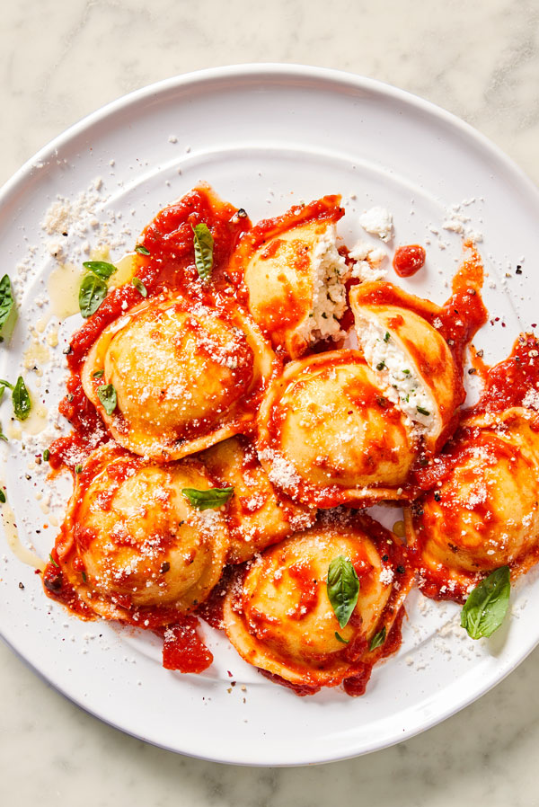

Home
Chesse Ravioli

Description
There’s nothing more satisfying than your own homemade pasta, so plan for an afternoon in the kitchen to make spinach ricotta ravioli. This DIY cheesy stuffed pasta is something you’ll want to make again and again.
Ingredients
- 2 cups DeLallo Whole-Milk Ricotta
- 2 cups fresh spinach, finely chopped
- 4 ounces shredded mozzarella cheese
- 1 egg
- 1/4 cup grated Parmigiano-Reggiano
- A pinch freshly grated nutmeg
- Salt and pepper
- Homemade Pasta Dough
- DeLallo Pomodoro Fresco Marinara Sauce